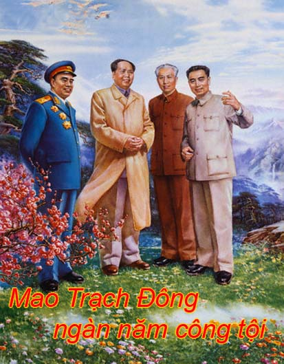

Cuốn “Mao Trạch Đông ngàn năm công tội" do nhà xuất bản Thư Tác Phường ấn hành, ra mắt tại Hông Công tháng 7-2007 và tới bạn tháng 6-2008, là một trong những cuốn sách đang được dư luận Trung Quốc hết sức quan tâm, với những luồng ý kiến nhận xét trái ngược nhau, từ hoan nghênh đến bất đồng, thậm chí phản đối gay gắt.
Tác giả Tân Tử Lăng nguyên là cán bộ nghiên cứu và giảng dạy tại Học viện quân sự cấp cao, Đại học Quân chính, Đại học Quốc phòng Trung Quốc. Ông nhập ngũ năm 1950, từng tham gia các phong trào chính trị do Mao phát động, về hưu năm 1994 với quân hàm Đại tá.
Đầu năm 2008, khi đề cập đến bối cảnh ra đời cuốn sách trên, Tân Tử Lăng nêu rõ: Công cuộc cải cách mở cửa ở Trung Quốc đã thu được những thành tựu lớn lao, đồng thời cũng nảy sinh nhiều vấn đề nghiêm trọng, đáng chú ý là việc không thể ngăn cản có hiệu quả nạn tham nhũng, việc phân phối của cải không công bằng dẫn đến xã hội bị phân hóa, khiến dân chúng rất bất mãn, nhiều người thậm chí công khai tố ra luyến tiếc thời đại Mao. Các thế lực cực tả ở Trung Quốc hiện nay muốn lợi dụng tâm trạng bất mãn này để phát động cuộc “Đại cách mạng văn hóa lần thứ hai”, gây cản trở cho việc thực thi các chính sách hiện hành. Nhân ngày giỗ Mao Trạch Đông 13-9-2005, nhiều cuộc mít tinh đã được tổ chức tại 18 thành phố lớn trong đó có Bắc Kinh, Thượng Hải. Thiên Tôn… với mục đích phê phán ban lãnh đạo hiện nay đã phản bội chuyên chính vô sản, phục hồi chủ nghĩa tư bản. Những người tham gia các cuộc mít tinh đã công khai hô các khẩu hiệu thời Đại cách mạng văn hoá, kêu gợi dấy lên bão táp cách mạng.
Tình hình trên khiến tác giả thấy cần phải làm cho mọi người thấy rõ thực trạng đời sống chính trị, xã hội và kinh tế của Trung Quốc dưới thời Mao, để từ đó có thể đánh giá một cách công bằng những công lao cũng như sai lầm của Mao đối với đất nước Trung Hoa, nhằm loại bỏ sự chống đối của phái cực tả đối với tiến trình cải cách mở cửa. Tuy nhiên, trong khi cố gắng làm điều đó, tác giả lại làm nổi lên một vấn đề quan trọng khác là: quan điểm của Trung Quốc về “chủ nghĩa xã hội mang màu sắc Trung Quốc" thực chất là gì? Và đâu là lối thoát chỗ Trung Quốc hiện nay?
Nhiều trong số những vấn đề được nêu ra trong cuốn sách như đánh giá về công lao và sai lầm của Mao, cuộc Đại cách mạng văn hoá, cái gọi là chủ nghĩa xã hội không tưởng dựa trên bạo lực của Mao, chủ nghĩa xã hội mang màu sắc Trung Quốc, hay việc chuyển từ chủ nghĩa xã hội không tưởng sang chủ nghĩa xã hội dân chủ… hoàn toàn là những quan điểm riêng của tác giả.
Đây là cuốn sách có tính chất tham khao Về nhiều vấn đề liên quan đến lịch sử và vấn đề lý luận của nước Trung Hoa đương đại, nhằm giúp bạn đọc có được những cái nhìn nhiều chiều về những vấn đề đang được nhiều người quan tâm này.
Xin trân trọng giới thiệu cùng bạn đọc.
THÔNG TẤN XÃ VIỆT NAM